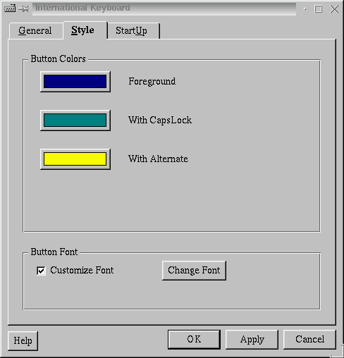

Next Previous Table of Contents

In the Style dialog, You can customize the colors and font used by the International Keyboard keyboard-indicator button that indicates which keyboard map is currently in use, and (by its color) shows whether the emulated Caps Lock is on or if the Alternate Switch key is depressed.
Button Colors:
Clicking on one of the colored buttons opens the ``Select Color'' dialog, which allows you to change the corresponding color used for the International Keyboard keyboard-indicator button.
Caps Lock emulation is
selected and the Caps Lock key is activated.Button Font:
This section allows you to change the font used on the keyboard-indicator button.
Next Previous Table of Contents